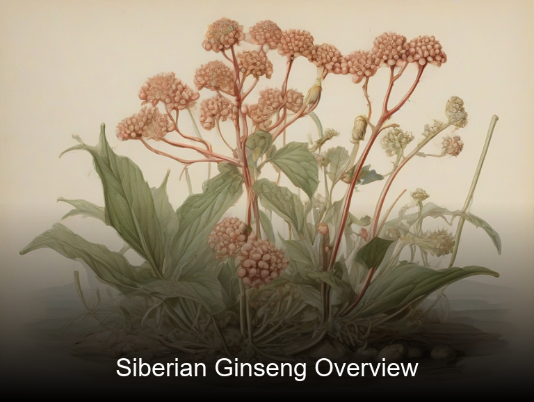
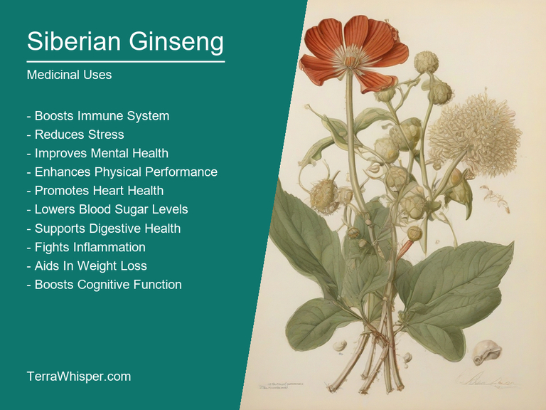
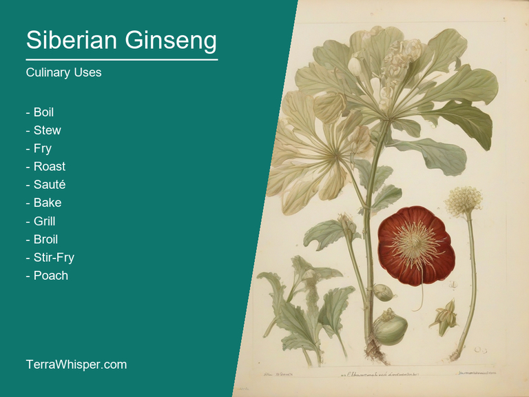
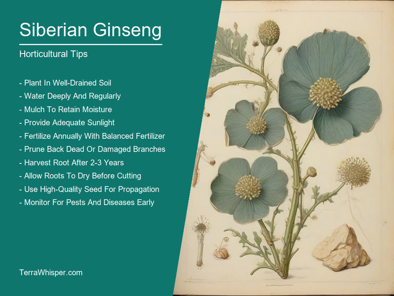
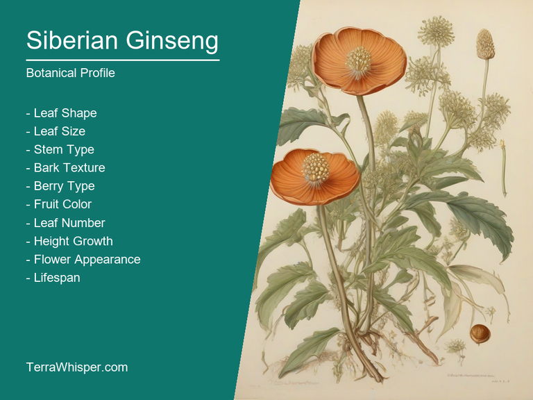
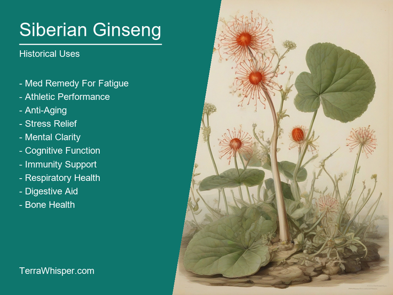

Siberian Ginseng, scientifically known as Eleutherococcus senticosus, is a medicinal and culinary plant with significant potential in various fields. It has been used for centuries due to its numerous health benefits and can also be consumed as an edible plant. The roots and leaves of this herb are often dried before they're processed into supplements or added as seasonings, but one must be cautious about the dosage because consuming too much may lead to adverse effects.
Siberian Ginseng is also known for its aesthetic appeal in garden spaces. The plant has a shrub-like appearance with thorny branches covered by a distinctive dark green bark. Its leaves are compound, consisting of seven leaflets, which gives it a distinctive pattern. The flowers are small and white, forming clusters at the ends of the branches. This ornamental aspect makes it an attractive addition to any garden, especially in areas where it's relatively easy to grow.
Originating from North-Eastern parts of Asia, Siberian Ginseng has a rich history dating back centuries. It was first used for its healing properties by indigenous peoples of the region. Later, during the 1950s and 60s, Russian researchers studied it intensively and found that it could help improve stamina and reduce stress. As an adaptogen, Siberian Ginseng has been known to boost immunity, promote physical endurance, and increase mental focus. It's also believed to have anti-inflammatory properties and may potentially be used as a remedy for certain illnesses like arthritis.
In this article, you will discover what are the medicinal and culinary uses of siberian ginseng. Then, you'll learn how to cultivate it, what is its botanical profile, and how it was used historically.
The medicinal constituents in Eleutherococcus senticosus primarily consist of triterpene saponins, which are responsible for its diverse range of healing properties. These compounds help modulate the immune system and regulate hormonal balance, ultimately contributing to better stress response. In addition, Siberian ginseng contains polyphenols, flavonoids, and antioxidants that fight inflammation and protect cells from damage caused by free radicals. This combination of active ingredients provides a potent natural remedy for various health concerns.
The following illustration lists the most important uses of siberian ginseng in medicine.

The most commonly used parts of the plant include its roots, stems, leaves, and fruits. They are typically processed into various forms such as extracts, tinctures, capsules, and teas to make them more accessible for consumption. These preparations deliver concentrated amounts of the medicinal constituents found within Eleutherococcus senticosus, allowing users to enjoy their numerous health benefits with ease.
While Siberian ginseng is generally well-tolerated by most individuals, it may cause some side effects for others due to its powerful nature. Some common symptoms associated with the use of this herb include headaches, increased anxiety and irritability, dizziness, insomnia, nausea, and digestive issues like diarrhea or constipation. It is essential to monitor one's response to Siberian ginseng and consult a healthcare professional if any adverse reactions occur.
To ensure safe usage of Eleutherococcus senticosus, certain precautions should be considered before integrating this plant into your daily routine. Individuals with high blood pressure or those taking medications that interact negatively with it should avoid using Siberian ginseng without consulting a healthcare professional. It's crucial to also exercise caution when consuming during pregnancy and breastfeeding, as the potential risks may outweigh any possible benefits in these situations. Additionally, individuals with autoimmune diseases or hormone-sensitive conditions should consult their doctor before using this plant, as it might exacerbate existing symptoms.
Siberian Ginseng (Eleutherococcus senticosus) is not only used for its medicinal properties but also has a place in the culinary world as a flavorful ingredient. It can be added to various dishes such as soups, stews, and stir-fries, enhancing their flavors while providing additional health benefits due to its antioxidant content.
The following illustration lists the most common uses of siberian ginseng for culinary purposes.

The flavor profile of Siberian Ginseng is unique, with a subtle earthiness combined with sweetness. Its taste is often described as being similar to ginger or licorice, making it an appealing alternative when seeking something different in the kitchen.
All parts of the plant can be utilized for culinary purposes, including its roots and the flowers. The young shoots are commonly used as a vegetable due to their tender texture and pleasant taste. They are usually added to salads or stir-fries and contribute additional nutrients while elevating dishes' flavors.
While Siberian Ginseng is generally considered safe for consumption, there are some potential side effects to be aware of. Consumption may cause stomach upset or allergic reactions in certain individuals who are sensitive to it or have pre-existing conditions. It's essential to use it in moderation and consult a healthcare professional if you have any concerns about its safety regarding health issues or medications you might be taking.
Siberian Ginseng or Eleutherococcus senticosus is a hardy perennial shrub native to East Asia, with an ability to thrive in various climates and soil types. To ensure proper growth, it needs adequate sunlight exposure (6-8 hours daily), well-drained yet fertile soil, and moderate water supply, keeping the roots slightly moist.
The following illustration lists the most important tips to cutlitvate siberian ginseng.

Planting Siberian Ginseng in its ideal environment is essential for healthy development. Begin by choosing a suitable site where temperatures don't drop below -10°C (14°F). Ideally, it should be away from direct wind and in an area with good air circulation. Prepare the soil by removing weeds and digging holes that are slightly larger than the root ball of the plant to prevent root-bounding.
Proper care is crucial for Siberian Ginseng's growth and health. Water regularly, maintaining the roots moist but not waterlogged. Fertilize once or twice a year with slow-release, organic fertilizer and maintain soil pH between 6 to 7 using dolomite lime if needed. Prune in late winter or early spring to remove dead branches and promote new growth.
Harvesting Siberian Ginseng can be done after it has reached maturity, which typically takes around three years. Harvest the root and leaves as you need them throughout the growing season. To ensure regrowth, only harvest a portion of the plant and leave some roots intact. Store fresh harvest in cool, dark areas for up to 10 days or use drying methods like hanging in a well-ventilated room to preserve for future consumption.
Siberian Ginseng is generally resistant to pests and diseases. However, it can be affected by some problems like Anthracnose (Colletotrichum gloeosporioides), which causes leaf spots and fruit rot. To avoid such issues, maintain good plant health through proper care, including the right environment, watering, and fertilization. Additionally, regularly inspect your plants for signs of pests or diseases and take appropriate action if needed.
Siberian Ginseng, with botanical name Eleutherococcus senticosus, belongs to the domain of Eukarya, kingdom Plantae, phylum Tracheobionta, class Magnoliopsida, order Cornales, family Araliaceae, and genus Eleutherococcus. Common names for this plant include Siberian Ginseng and Acanthopanax senticosus.
The following illustration display the botanical profile of siberian ginseng.

Russian, Chinese, and Japanese. The Russian variant exhibits smooth stems and spiny leaves whereas the other two have prickly stems with spines on them. The variations have adapted slightly based upon their native environments.
Geographically distributed throughout Russia and parts of Asia, Siberian Ginseng thrives in subarctic to temperate forests on mountains as well as in coniferous and mixed forests. It can also be found growing near lakesides or streams, where it prefers moist soil with a neutral pH.
The life cycle of Siberian Ginseng is characterized by its perennial growth habit. This plant grows from seeds, which germinate under the right conditions and can grow up to 6 feet tall in maturity. It produces small white flowers that bloom in clusters during spring or early summer. After pollination by various insects, the flowers develop into greenish-yellow berries called achates. These berries later mature to red, turning dark purple when ripe and are consumed by birds, which aid in seed dispersal, further supporting the growth and distribution of this remarkable botanical species.
Siberian Ginseng, scientifically known as Eleutherococcus senticosus, is a traditional Chinese herbal remedy that has been used for centuries due to its numerous health-improving properties. It is also recognized for its ability to boost mental focus, relieve stress and strengthen the immune system. This incredible medicinal plant has played an essential role in various aspects of culture across history, particularly in ancient traditions, religious ceremonies, and even as a remedy used by shamans for their healing practices.
The following illustration lists the most well known historical uses of siberian ginseng.

In traditional medicine, Siberian Ginseng was often employed to combat a range of illnesses such as respiratory issues, digestive disturbances and blood disorders. One intriguing aspect of its use in ancient China involved employing it as an aid in divination processes, particularly for fortune-telling. The plant's potency was believed to enhance the accuracy of predictions made during these practices.
Siberian Ginseng also holds a unique position within folklore and legends, with numerous stories surrounding its origin and usage. According to ancient narratives, the plant is said to have been discovered by an herbalist and his apprentice who were searching for a powerful healing remedy. The duo stumbled upon a hidden cave where they encountered an elderly woman who, due to her extraordinary age, was believed to possess unparalleled wisdom. In exchange for sharing this knowledge, the herbalist agreed to take care of the elderly woman for a lifetime in gratitude for revealing the secret to Siberian Ginseng's remarkable healing properties.